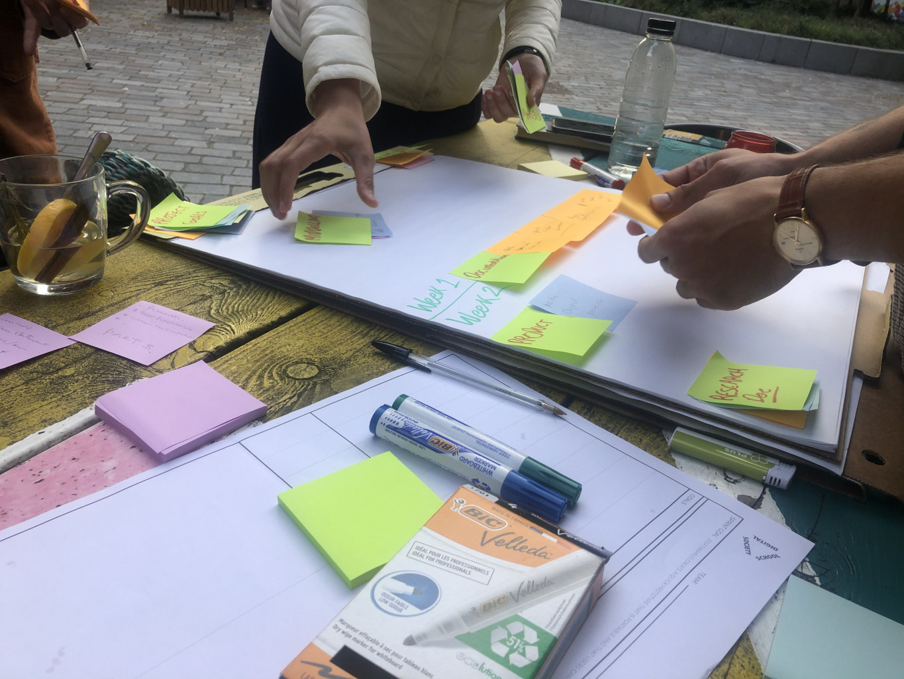
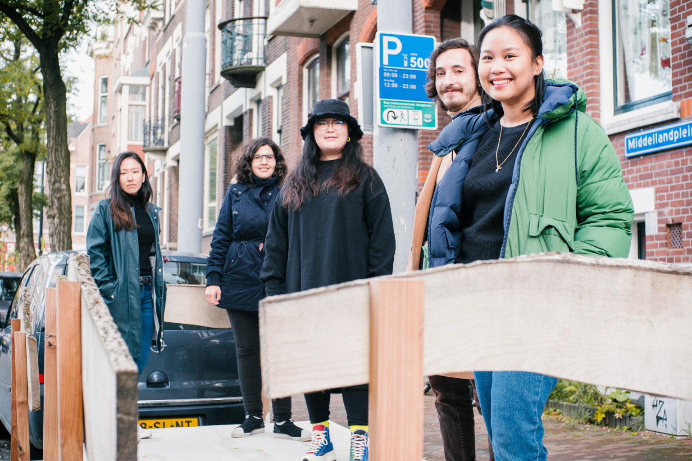
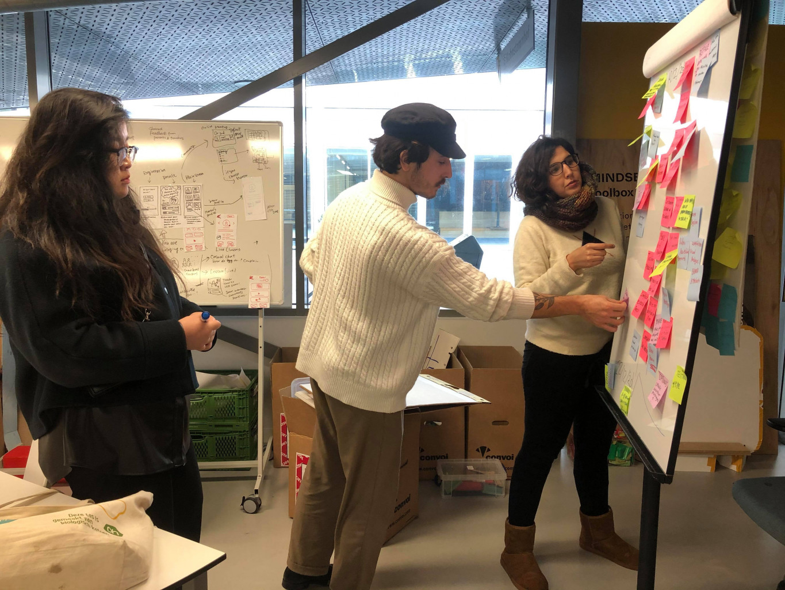

IncluCity is a partnership between the Digital Society School, Delfshaven Digital, De Middellander
Het Wijkbedrijf,
and Stichting CAATS. The project is to be developed and tested in Middelland, a neighborhood located
in Rotterdam. We intend to
implement the platform throughout the city after testing and, when that is succesful, then implement
it nationally and globally.
We chose Middelland as a starting point, because the neighbourhood was already quite active, making
it easier to contact groups of residents
through existing initiatives. The core of action in Middelland was the co-creation programme Mooi,
Mooier, Middelland. The Mooi, Mooier, Middelland
process is about building stronger and more resilient communities. It is a leading example in the
Netherlands for new forms of local democracy and
structural co-creation. Due to the fact that initiatives like these are already present and active
within Middelland we thought it would be best to
start there so we could collaborate and support each other in our goal to build a inclusive,
resilient community. After all, many hands make light work.
Maker Sprint
After team and project allocations, the team started brainstorming and making rough sketches of
their idea based on the briefing and the introduction with the partners. During this sprint,
the team began participating in workshops and doing their respective research to kickstart their
user research
and conversational object. The object was also a way as well to gather insights and act as a
springboard for the prototype,
and instigate interest for the Showcase last September 17.
Sprint 1
The objective of the sprint was to empathize our potential users in their context and have a clear
understanding so that we can re-frame the research question of our project. The desk research on
Middelland has gave context specific information about the neighborhood and its demography. Also,
additional literature review provided theoretical guidance in looking at the problem by taking
inside-out approach, known as ABCD framework. At the end of the sprint, the team prepare to take a
trip to Middle to conduct a field observation and semi-structured interviews.

Sprint 2
During the trip to Middelland, the team successfully conducted semi-structured interviews with local
community initiators and residents. The team also decided to distribute posters with QR survey
questionnaires around the neighborhood to enrich our data.
Due to Covid-19, the research process became very complicated and some resources inaccessible, and
some groups were more difficult to reach.
In this stage, we also create personas and conduct a co-creation session with partners to align the
problem.

Sprint 3
The third sprint is when the creation process really kicked-off for team Open Up! During the
planning session, it was established that the team will start making and testing their low-fidelity
prototype, finalizing their research report, and making a
Medium post on the design process. It was
also during this process wherein the team deep-dived into empathizing with users by creating user
journeys. Then a user flow was made as well, and that is when the team began
to decide on the features of Open Up and see how elements of playfulness and participation can be
evoked in the product. So far, the team has decided to focus on the idea of being a neighborhood
hero! To facilitate the team's creativity, they also joined a workshop on Participatory Art,
courtesy of their partners, Tom and Andreia.
Sprint 4

Crunch time! The fourth sprint will be the shortest sprint for team Open Up, as they only have two
and a half weeks before the holiday break! The team began the sprint by planning their main tasks
for the next few weeks, which include finalizing the low-fidelity prototype, testing it again, and
begin making a high-fidelity version. Aside from the digital product (which is an application), the
team is tinkering with the idea of making a small kit to engage Middelland residents to try the app.
This kit could include a superhero mask and a map of Middelland. This sprint is also when they go
further with designing and distributing the app, hence much of Sprint 4 is still TBA.